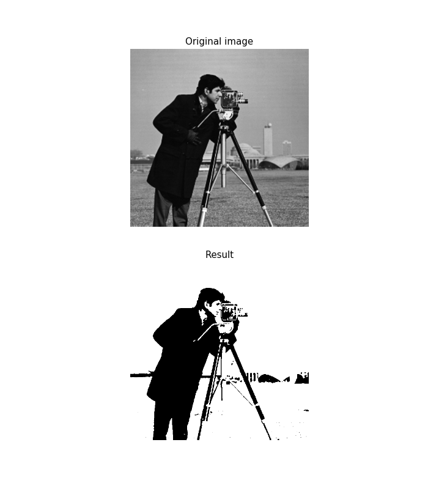

The minimum algorithm takes a histogram of the image and smooths it repeatedly until there are only two peaks in the histogram. Then it finds the minimum value between the two peaks. After smoothing the histogram, there can be multiple pixel values with the minimum histogram count, so you can pick the ‘min’, ‘mid’, or ‘max’ of these values.
import matplotlib.pyplot as plt
from skimage import data
from skimage.filters.thresholding import threshold_minimum
image = data.camera()
threshold = threshold_minimum(image, bias='min')
binarized = image > threshold
fig, axes = plt.subplots(nrows=2, figsize=(7, 8))
ax0, ax1 = axes
plt.gray()
ax0.imshow(image)
ax0.set_title('Original image')
ax1.imshow(binarized)
ax1.set_title('Result')
for ax in axes:
ax.axis('off')
plt.show()
Total running time of the script: (0 minutes 0.217 seconds)
plot_threshold_minimum.pyplot_threshold_minimum.ipynb Source
Source